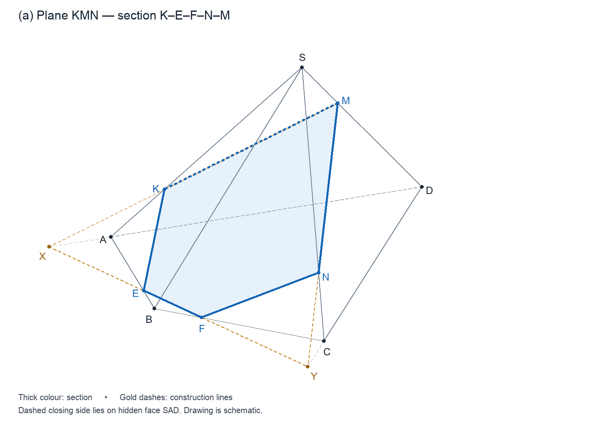
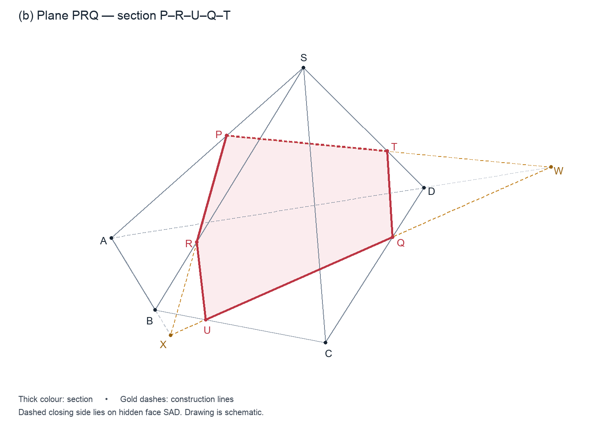

Сечения четырёхугольной пирамиды
Ответы:
(а) сечение K–E–F–N–M
(б) сечение P–R–U–Q–T
Дана пирамида SABCD. В задании буква S используется дважды: для вершины и для красной точки на ребре CD. Здесь красная точка обозначена Q. Поэтому плоскость (PRS) из задания ниже записана как (PRQ).
Основное правило: секущая плоскость пересекает каждую грань по прямой. Две известные точки на одной грани определяют эту прямую. При необходимости прямые можно продолжать за пределы пирамиды, чтобы найти вспомогательные точки пересечения.
(а) Плоскость (KMN)
Ответ: пятиугольник KEFNM.

Построение
- Проведите KM и MN. Точки K и M лежат на грани SAD, а точки M и N — на грани SCD. Поэтому эти отрезки являются сторонами сечения.
- Продлите MK за точку K, а DA — за точку A. Обозначьте их точку пересечения: X = KM ∩ AD.
- Продлите MN за точку N, а DC — за точку C. Обозначьте Y = MN ∩ CD.
- Проведите XY. Точки X и Y лежат одновременно в секущей плоскости и в плоскости основания, поэтому XY — линия пересечения этих плоскостей.
- Обозначьте E = XY ∩ AB и F = XY ∩ BC.
- Соедините вершины сечения в порядке: K → E → F → N → M → K.
Стороны сечения лежат на следующих гранях: KE — на SAB, EF — на основании ABCD, FN — на SBC, NM — на SCD, MK — на SAD.
Типичная ошибка: не добавляйте вершину на SB. В данном рисунке секущая плоскость пересекает продолжение SB ниже точки B, то есть за пределами ребра.
(б) Плоскость (PRQ)
Ответ: пятиугольник PRUQT.

Построение
- Проведите PR. Обе точки лежат на грани SAB, поэтому PR — одна из сторон сечения.
- Продлите PR за точку R, а AB — за точку B. Обозначьте X = PR ∩ AB.
- Проведите XQ. Точки X и Q лежат одновременно в секущей плоскости и в плоскости основания, поэтому XQ — линия пересечения этих плоскостей.
- Обозначьте U = XQ ∩ BC. Соедините R с U.
- Продлите XQ за точку Q, а AD — за точку D. Обозначьте W = XQ ∩ AD.
- Проведите PW и обозначьте T = PW ∩ SD.
- Соедините T с Q. Полученное сечение: P → R → U → Q → T → P.
Стороны сечения лежат на следующих гранях: PR — на SAB, RU — на SBC, UQ — на основании ABCD, QT — на SCD, TP — на SAD.
Как оформить итоговые рисунки
Для каждой части используйте отдельный рисунок пирамиды. Вспомогательные линии проводите тонко. Границу сечения выделите более толстой линией, а внутреннюю область слегка заштрихуйте. Согласно принятому на рисунке обозначению видимости, в части (а) проведите KM, а в части (б) PT штриховыми линиями, поскольку они лежат на невидимой грани SAD. Точки за пределами пирамиды являются вспомогательными, а не вершинами сечения.